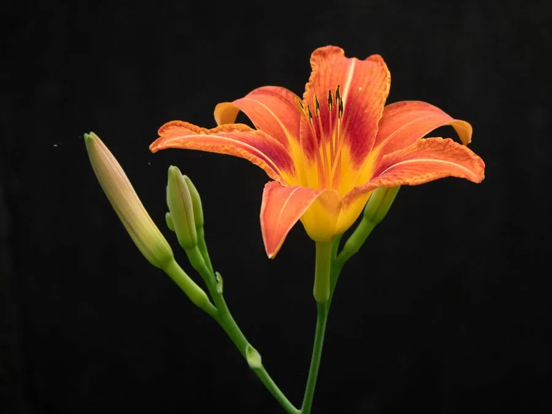

花卉与草本 · 植物界
萱草 Hemerocallis fulva

阿福花科多年生草本，橙红色花朝开暮落，古称忘忧草，是中国传统的母亲花和庭园观赏植物，也是夏日花境的主角。
- 分类
- 门被子植物门纲木兰纲目天门冬目科阿福花科属萱草属
- 栖息环境
- 山坡、林缘、溪边及路旁，喜光也耐半阴
- 地理分布
- 原产中国，朝鲜半岛及日本也有分布，中国南北各地常见
- 保护级别
- 暂无评估
物种志
萱草为阿福花科萱草属多年生草本，株高 40–100 厘米，具肉质根，根端常膨大成纺锤状块根。叶片基生，线形，长 30–80 厘米，排成两列。花葶自叶丛抽出，花序有花 6–12 朵，花橙红色至橘黄色，花被片 6 枚，花期 5–8 月，果期 7–9 月。
萱草原产中国，广泛分布于山坡、林缘和溪边，喜阳光充足或半阴、湿润的环境，耐寒耐旱，适应性强。它的每朵花只开一天，清晨开放、傍晚凋谢，但整株花序会持续开花数周。中国古籍称萱草为“忘忧草”，《诗经》中已有记载，古人常把它种在母亲居所旁，因此萱草也被视为中国的母亲花。黄花菜是萱草属中可食用的种类，而常见观赏萱草含秋水仙碱，误食会中毒。
形态与习性
- 株高40–100 厘米，具肉质块根
- 花期5–8 月，单朵花仅开一天
- 果期7–9 月，蒴果
- 光照喜光，也耐半阴
- 水分喜湿润，也耐短时干旱
- 土壤疏松肥沃、排水良好的壤土
- 主要用途庭园观赏、食用黄花菜、药用
趣味知识
- 萱草每朵花只开一天，清晨绽放、傍晚凋谢，次日由新的花蕾接替。
- 古人称萱草为忘忧草，并把它种在母亲居所旁，故萱草被视为中国母亲花。
- 可食用的黄花菜是萱草属的另一物种，观赏萱草含秋水仙碱，不可食用。
- 萱草根端常膨大成纺锤状块根，储存养分以度过冬季。